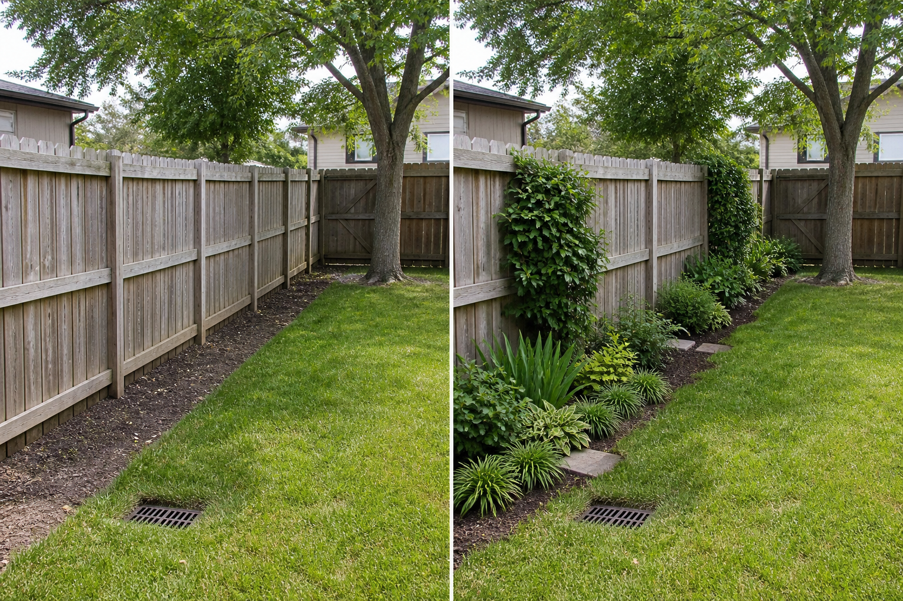

Vary the bed depth
Wider pockets at selected points allow visible layers without sacrificing the full lawn edge.
Treat the fence as a boundary that may still need inspection and repair. Vary the border depth, repeat planting groups, protect gates, drains, and roots, and leave realistic access rather than pressing a solid row against every panel.
Editorially reviewed August 14, 2026.
This AI-generated comparison is visual inspiration, not a measured plan, specification, safety assessment, cost estimate, local approval, plant recommendation, or construction guarantee.

Wider pockets at selected points allow visible layers without sacrificing the full lawn edge.
Recurring groups create rhythm while leaving parts of the fence readable.
Discreet footholds suggest access to panels and the rear layer without claiming exact clearances.
The concept keeps the fence, posts, gate, drain, lawn, mature tree, ground level, and neighboring view. It does not attach climbers, raise the boundary, hide damage, or specify plants and spacing.
Record doors, gates, paths, furniture movement, utilities, drains, roots, and maintenance access. Do not infer clearance from the image.
Note direct sun, shade, wind, overlooking, and views from inside across more than one time and season before choosing materials or plants.
Locate falls, low points, downpipes, drains, and recurring wet areas. Preserve existing outlets and seek appropriate advice before changing runoff or levels.
Check permissions, product information, plant suitability, mature size, toxicity, invasiveness, upkeep, and any safety requirements for the actual site.
Avoid planting against damaged panels, blocking gate swing or drains, crowding tree roots, choosing future sizes from an image, and attaching supports without permission. Stop for boundary disputes, fence replacement, excavation, roots, drainage, structural fixings, invasive plants, or uncertain toxicity.
Check ownership, condition, sun, water, roots, gate movement, and maintenance access, then use repeated layers sized from reliable local plant information.
Not necessarily. Leaving sections visible can preserve rhythm, inspection access, airflow, and a less crowded appearance.
There is no universal number. Base it on verified mature size, fence maintenance, airflow, and the actual access task.
Upload a level, wide photo to compare restrained concepts before making physical changes.
AI-generated visualizations are concepts. Verify measurements, conditions, drainage, access, structure, utilities, local rules, product information, plant suitability, and professional requirements before buying or building.